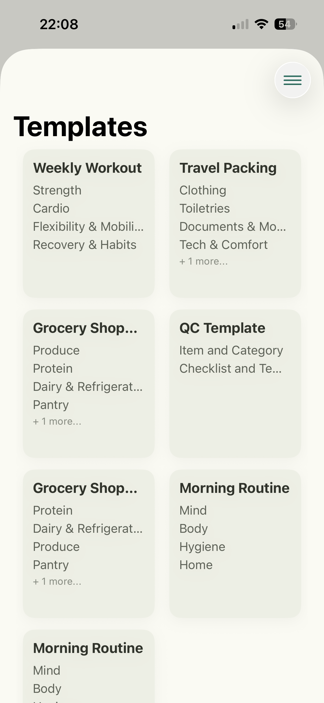
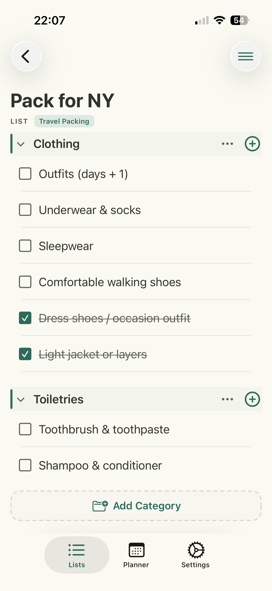
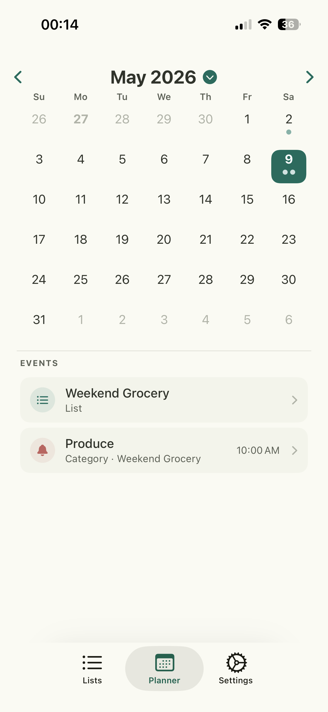
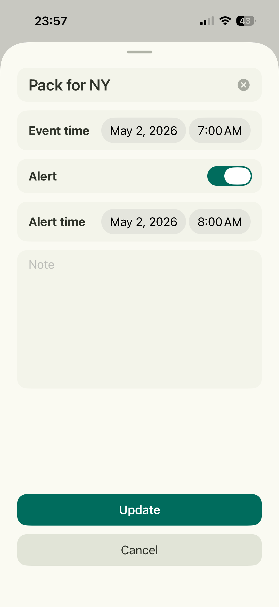

iOS App
Your recurring tasks,
finally organised.
Wholistic lets you build templates for recurring events, spin up checklists in seconds, set smart alerts, and see everything laid out in a clean calendar view.



How It Works
From template to done — in moments
Stop recreating the same checklist every time. Build it once as a template, then launch it whenever you need it.
Build a template
Define all the tasks for a recurring event once — weekly review, travel prep, home maintenance, anything you do repeatedly.
Launch a checklist
Tap your template to generate a fresh, ready-to-use checklist for the occasion. Every item starts clean.
Set smart alerts
Attach reminders to individual items or the whole event so nothing slips through the cracks.
See it in the calendar
All your active checklists appear in a calendar view so you can plan ahead and track progress at a glance.
Features
Checklist for recurring events
Feature 01
Reusable templates for every occasion
Create a master template once and reuse it forever. Whether it's a weekly house clean, a monthly budget review, or a pre-trip packing routine — your tasks are always ready to go.
Feature 02
Clean, satisfying checklists
Each checklist is crisp and distraction-free. Check items off as you go, track your overall progress, and feel the satisfaction of a completed list.

Feature 03
Alerts that actually help
Set reminders at the event level or on individual tasks. Wholistic surfaces the right notification at the right time — so you can focus on doing, not on remembering.
Feature 04
See the whole picture in calendar view
Your active checklists are mapped onto a calendar so you always know what's coming up, what's in progress, and what you've already knocked out this week.
Why Wholistic
Built for the way you really work
Template-powered
Define your recurring tasks once and reuse them endlessly — no copy-pasting, no starting from scratch.
Smart alerts
Attach reminders to any item or event so the right nudge arrives exactly when you need it.
Calendar view
A unified calendar gives you the full picture of upcoming, active, and completed checklists.
Stop reinventing your routine.
Wholistic is built for the tasks you do again and again — get it on the App Store.
Download on the App Store